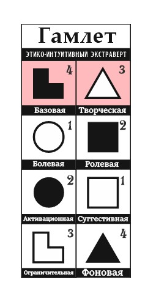
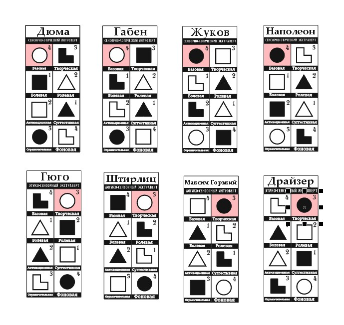
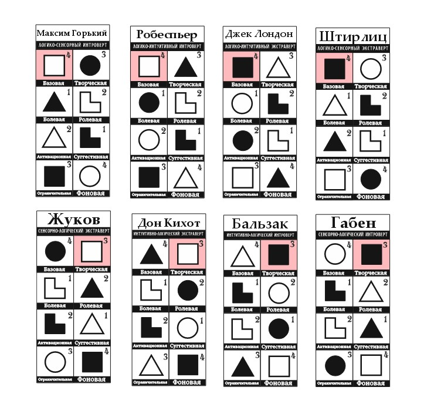
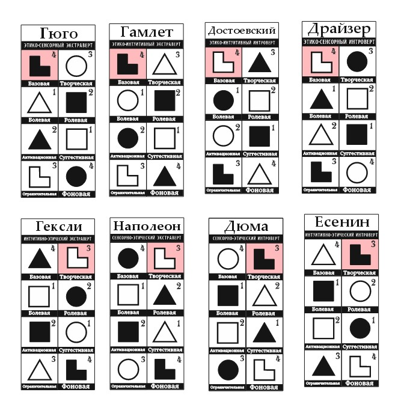
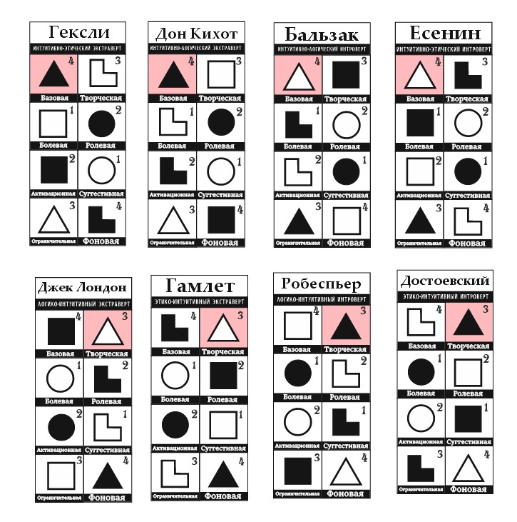

Как проходит типирование?
Типирование проходит в формате интервью. Мы всегда стараемся обеспечить комфорт нашего гостя, поэтому предлагаем выбор: провести встречу в формате онлайн или офлайн. Очные встречи проходят в Санкт-Петербурге. На очной встрече мы можем организовать массовое типирование или одиночное собеседование. Заочные созвоны происходят с нами один на один в Discord и Zoom.
Что нужно для записи на типирование?
Все очень просто! Ты можешь написать нам в ТГ канал или в личку, и мы сможем договориться о типировании наиудобнейшим для тебя образом.
В кого тебя могут протипировать?
Всего в соционике 16 типов, они отличаются. Чтобы понять к какому типу принадлежишь ты, нужно понять к какой квадре ты относишься, интроверт ты или экстраверт, сенсорик, логик, этик или интуит. На первый взляд звучит сложно, но не переживай, все намного проще.
.jpg)
Почему у меня в Модели А какие-то фигурки?
Фигурки в Модели А называются функциями. Их положение в ней зависит от мерности, чем больше она, тем сильнее функция. Самая сильная мерность 4, а самая слабая 1, эти циферки указаны справа сверху рядом с функцией.
Верхние две ячейки в Модели А каждого типа помогут узнать его альтернативное название. Эти ячейки называются базовым блоком. Если первая функция в базовом блоке черная, то ты экстраверт, а если белая, то интроверт. Первая фигурка с мерностью 4 - твоя базовая функция, она твой главный инструмент, который нельзя выключить или перестать использовать, вторая фигурка с мерностью 3 ее помощница, обычно они работают вместе, поэтому не удивительно почему они обе дают название своему типу.
Исходя из этого Гамлет у нас Этико-интуитивный экстраверт
Кто такие сенсорики, логики, этики или интуиты?
Сенсорики лучше воспринимают наш мир через тактильные ощущения, вкусы, запахи и т.д. Они прекрасно справляются с работой руками, могут представить и описать ощущения от чего-либо, не зная о предмете ничего, кроме названия или внешнего вида.
Логики находят себя в интеллектуальной работе, рационализации и организации процессов.
Этики отвечают за эмоции, эмоциональное состояние людей вокруг себя и налаживание контактов. Такие люди становятся замечательными друзьями и собеседниками.
Интуиты замечательно чувствуют время вокруг себя, знают как выбраться из любой ситуации,
Какие бывают квадры?
Всего квадр четыре - Альфа, Бета, Гамма и Дельта. У каждой дельты есть своя ценность. В Альфе - это обучение, познание нового и комфорт в любом его проявлении. В Бете - проявление всех возможных эмоций и преодоление самого себя, чтобы достичь все большего и большего.В Гамме ценятся деньги, возможность работать или иметь свой бизнес. В Дельте важны отношения с близкими людьми и "погода в доме".
Хочешь узнать свой тип? Давай протипируемся!